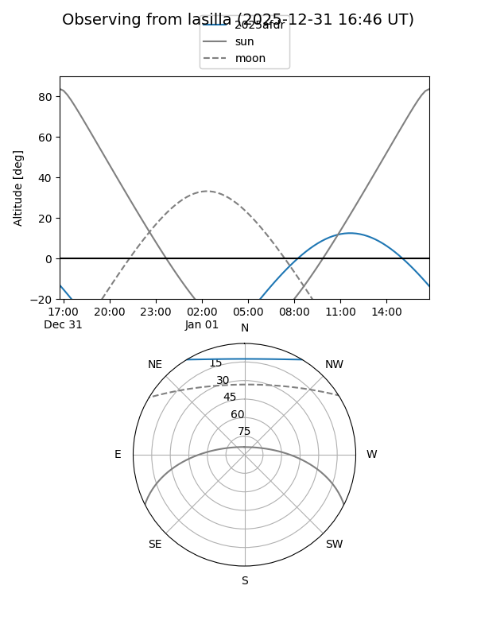
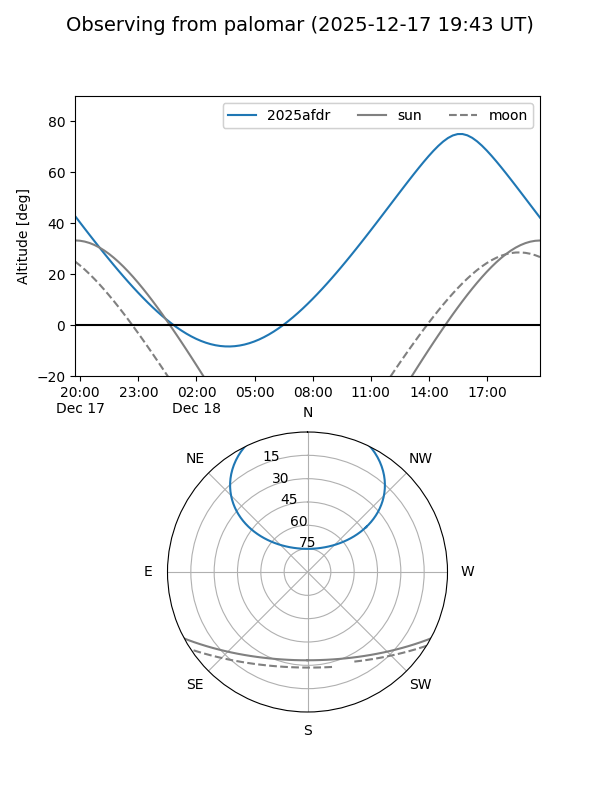

2025afdr
Target 2025afdr at 2025-12-18 11:17
Aliases and brokers:
FINK: fink-portal.org/ZTF25acfgjhg
Lasair: lasair-ztf.lsst.ac.uk/objects/ZTF25acfgjhg
ALeRCE: alerce.online/object/ZTF25acfgjhg
TNS: wis-tns.org/object/2025afdr
YSE: ziggy.ucolick.org/yse/transient_detail/2025afdr
alt names
ZTF25acfgjhg (ztf,fink_ztf)
2025afdr (tns,yse)
Coordinates:
equatorial (ra, dec) = 204.5700,+48.37509
equatorial (HMS+DMS) = 13:38:16.80,+48:22:30.32
galactic (l, b) = (102.8457,+66.88560)
Photometry
last ztfg=19.96
2 ztfg detections
Lightcurve

Visibility


Additional plots